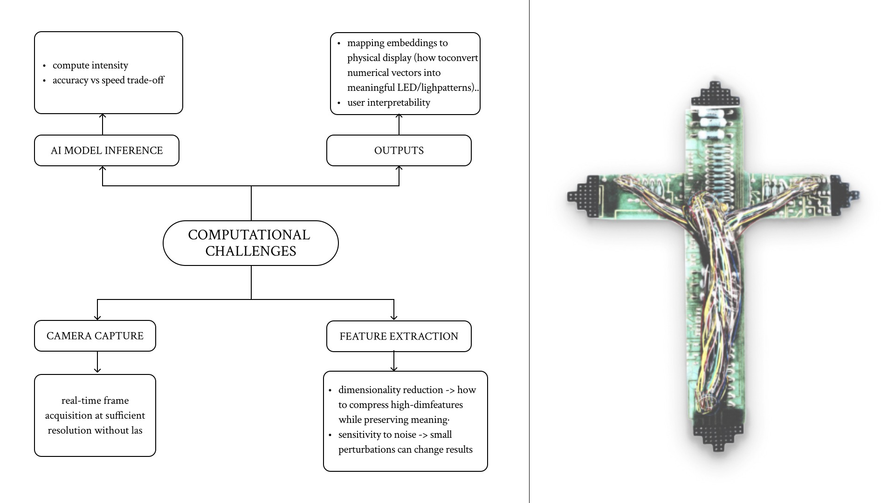

Design Tech
Specialization
:
Ontography Diagram
Human Identity, Subjectivity, Self / Self-Sense, Body / Embodiment, Personhood, Visibility / Invisibility, Fragmentation, Ownership, Otherness, Authenticity, Dataset, Label / Annotation, Token, Category, Class, Feature, Attribute, Bird’s-eye Label, Visual Fragment, Statistical Category, Machine-Readable, Metadata, Bias, Consent, Collection / Data Collection Method, Pattern Recognition, Prediction, Algorithm, Deep Learning, Model, Training, Inference, Representation Learning, Generalization, Visual Culture, Interface, Perception, Physicalization, Material System, Sensor, Screen, Glitch / Distortion, Visibility / Invisibility, Representation, Ethics, Consent, Power, Surveillance, Privacy, Identity Politics, Categorization & Exclusion, Inequality, Normativity, Agency, Ecosystem, Network,
Project Question
We want to explore how human beings are increasingly abstracted and deconstructed into compressible data structures within large-scale machine learning systems. In today’s digital landscape, our bodies and identities are no longer seen as whole, subjective beings. Instead, they are reduced by the internet and AI into visual fragments, labeled tokens, statistical categories. For example, a face in a dataset is no longer tied to its owner — it becomes Asian / female / smiling / tilted gaze — a depersonalized unit optimized for pattern recognition and prediction.
This line of thinking raises the following questions:
-
What happens to our sense of self
when human subjectivity is converted into
machine-readable fragments?
How does annotation and labeling
shape what is visible — and what becomes invisible or lost?
Can we design an experiential interface that reveals this transformation and exposes what usually remains hidden?
Forking Paths – possible project diagram
The map on the right forks into Software and Hardware trunks: TouchDesigner, facial-landmark detection, style transformation route signals into Raspberry Pi with LED matrices / old television screens, speakers, cameras, IR sensors and a circuit assemblage.
Pipeline: sensor data → feature extraction → generative AI → physical output, culminating in a video wall and a circuits-based sculpture. This diagram is the navigation key for future prototypes.
{kind=link}
Reflections on barriers to entry
1. Technical Barriers
As an installation,
the project requires a large physical setup
with circuits,
cameras,
sensors,
displays.
The challenge lies in balancing aesthetics with engineering:
how to maintain a visually coherent and engaging form while ensuring
all circuits are reliably connected
and each component functions properly.
2. Data Barriers
The project depends on extracting data directly from participants
(images,
speech,
gestures).
This raises the question of user willingness:
will audiences consent to having their identity
abstracted,
tokenized, or
classified?
Without voluntary participation, the interactive dimension of the work cannot unfold.
3. Conceptual Barriers
Communicating the main ideas and processes of the project is itself a challenge.
Many visitors may not be familiar with
AI algorithms or the artistic strategies of
abstraction and
physicalization.
We must design explanatory layers — visual, textual, or experiential —
that make the project accessible without oversimplifying its critical intentions.
Map and diagrams
of the computational challenges of the project
